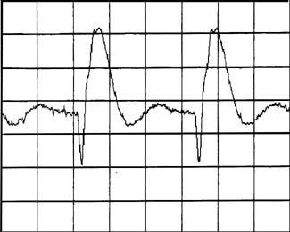
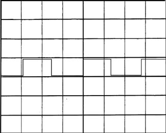

Proprietary to General Electric
Direction 5114045-800, Rev# 10
LightSpeed 4.X Service Information (Advanced)
Proprietary to General Electric |
Estimated Completion Time: Mean time 60 min.; max. time 90 min.
Wed Mar 5 10:42:53 1997 Error: 183124 Suite: TMC2 Host: OBC Process: Generator File: gen_abort.c 1.30 Method: No Method Line: 368 Function: XRAY GENERATION : Filament Selection Scan: 0/0/1 Type: Static Exception Level: Pri/Most Severe Time: 10:42:52:865 Log Series: 32 FIL/MA fault detected: Inoperative filament inverter. Desired focal spot = 0. (0 = large, 1 = small) Fault latch address = ffdf4d hex, Bit = D7 Wed Mar 5 10:53:55 1997 Error: 214335 Suite: TMC2 Host: OBC Process: Diag Exec File: isr1_handler.c 1.33 Method: obc_isr1_handler Line: 516 Function: Diagnostics XRAY GENERATION : MA Loop Test Name: XRay - Manual Unique ID: 52105 Iteration: 1 Exc. Level: Hard Time: 85769 Error Type: Hardware Filament error. A filament inverter error has been detected. MA address: FFDF4DH Bit: D7
The address FFDF4D/7 is INV_FLT (Inverter Fault). INV_FLT is toggled by INV_Fault on the mA/Filament Control board. INV_Fault compares the Fil_CT (Filament Center Tap) to a reference. When the reference voltage versus the filament center tap voltage is not correct an error is generated.
The mA Control Board generates a square wave with inductive spikes on the center tap. TP27 can be used to look at this square wave.
Most probable cause is that a square wave does not exist at TP27. Check the 30 vdc filament power supply, harness, and filament control board.
Filament Control Board schematic
mA/Filament Control Board
30 vdc Filament Power Supply
Harness between Power Supply/mA board
Observe with an oscilloscope the signal at TP27. Look for a wave shape similar to Illustration 1.
Observe with an oscilloscope the signal at TP27. Look for a wave shape similar to Illustration 2.
Observe with an oscilloscope the signal at TP27. Look for a wave shape similar to Illustration 3.
Check TP21 For 30vdc. Use TP29 or TP30 for FGND.
Check the Filament power Supply for proper voltages.
Gather all previous data, then escalate
OLC
Zone Support
Observe with an oscilloscope the signal at TP27
Oscilloscope settings: Use 10X probes, time base is 20uS/d, voltage is 5v/d. Put the probe on TP27, use TP29 or 30 (FGND) for ground.
System on standby
Look for wave shape similar to Illustration 1.
PASS: Wave shape is similar to Illustration 1. This wave shape indicates that the mA subsystem is operating OK. To be at this step doesn’t make sense. Either the mA Control is giving a false indication of this error, or this is not the primary error. Suggested action is to reevaluate your detection of the primary error.
FAIL: Wave shape does not match Illustration 1. Continue to next step.
Observe with an oscilloscope the signal at TP27
Oscilloscope settings are similar to step 1
System on standby
Look for a wave shape similar to Illustration 2.
PASS: Wave shape is similar to Illustration 2. This wave shape indicates that the mA Control circuitry is operating ok. The loss of inductive spike on the edges of the square wave indicate an open in the filament section of the harness, cathode tank, HV cables or tube. IF this is true the primary error in the log should be FILAMENT OPEN. Troubleshoot FIL OPEN error first.
FAIL: Wave shape does not match Illustration 2. Continue to next step.
Observe with an oscilloscope the signal at TP27
Oscilloscope settings are similar to step 1
System on standby
Look for a wave shape similar to Illustration 3.
FAIL: Wave shape does not match Illustration 3. This step doesn’t make sense. TP27 MUST match Illustration 1, Illustration 2, or Illustration 3 with this error.
*If you have not properly executed the DETECT phase of your troubleshooting. Re-evaluate your detection of the problem, and/or ask for help.
PASS: Wave shape is similar to Illustration 3. This wave shape indicates that the mA Control not working, either because the mA Control Bd. Itself is inoperative or critical voltages are missing. CONTINUE to subsequent steps to determine the failed FRU.
Check TP21 For 30vdc. Use TP29 or TP30 for FGND.
PASS: TP21 has 30vdc, AND TP27 is flat-lined. This indicated that the control board has the proper voltage, but is not creating the filament signal.
Replace the mA Control Bd.
Verify system operation
You are Done
FAIL: TP21 has no 30vdc. CONTINUE to the next step.
Check the Filament power Supply for proper voltages.
Check the output of supply for 30vdc. If supply has 30vdc here, but not at the mA Control Bd. Troubleshoot harness in between.
If no 30vdc at output verify 120vac at the input to the power supply. IF 120vac is ok, replace Filament Power Supply.
ELSE troubleshoot NO 120 vdc
Verify system operation
You are done
Gather all previous data, then escalate
Zone Support
OLC
Illustration 1: TP27 Waveform

Illustration 2: TP27 square wave

Illustration 3: TP27 flat-line
END OF PROCEDURE